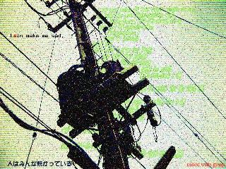

This page is designed with HTML + CSS.
これは、 serial experiments lain に関する Web ページです。
Text: Last Modified at Nov. 01, 1999.

これは、「serial experiments lain」に関する用語辞典である。 lain のシナリオ集 『scenario experiments lain』、 ムック『visual experiments lain』、 画集『an omnipresence in wired』が 現在発売されており、 lain に関する基礎資料は出揃っている。 そこで、この用語辞典では、これらの内容とあまりクロスオーバーしないよう、 登場人物の紹介などには力点を置かず、 わたしたちが繋がっているどこかと、こちら側が交差する狭間に 存在する事柄を中心に構成した。
項目は、「あいうえお」順に並んでいる。 なお、数字の項目は先頭におかれている。